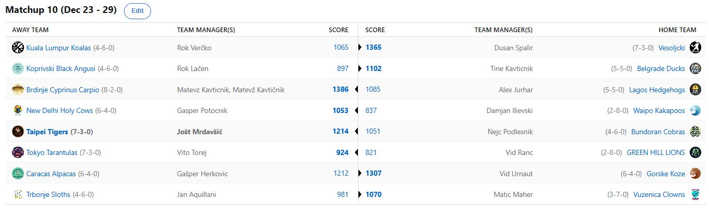

SEZONA 24/25
- Pravila in sistem tekmovanja
- Matchup1 (Oct 22 - Oct 27)
- Matchup2 (Oct 28 - Nov 3)
- Matchup3 (Nov 4 - Nov 10)
- Matchup4 (Nov 11 - Nov 17)
- Matchup5 (Nov 18 - Nov 24)
- Matchup6 (Nov 25 - Dec 1)
- Matchup7 (Dec 2 - Dec 8)
- Matchup8 (Dec 9 - Dec 15)
- Matchup9 (Dec 16 - Dec 22)
- Matchup10 (Dec 23 - Jan 29)
- Matchup11 (Dec 30 - Jan 5)
- Matchup12 (Jan 6 - Jan 12)
- Matchup13 (Jan 13 - Jan 19)
- Matchup14 (Jan 20 - Feb 26)
- Matchup15 (Jan 27 - Feb 2)
- Play-in (Feb 3 - Feb 23)
- Playoff 1 (Feb 24 - Mar 9)
- Playoff 2 (Mar 10 - Mar 23)
- Playoff 3 (Mar 24 - Apr 6)
2024/25 - Fantasy Koroška - sezona 8
MATCHUP 10 (Dec 23 - Dec 29)
Poročilo kroga
Medtem ko se je v preteklem tednu največkrat uporabila čestitka »vesel Božič«, pa se je za najboljše 4 managerje v hiper zanimivi
NBA Fantasy Koroška že lahko začela uporabljati tudi manj znana, a zato nič kaj manj slajša voščilnica »sretan playoff clinching
day svima koji slave«. In kdo ga slavi? Kavt, Jole, Vito in Dule. Ostali nubci bodo morali na kaj takega še malce počakati.
Mato, znan tudi pod umetniškim imenom Nina Pušlar, je zabeležil še osmo zmago v letošnji sezoni in si kot vodilni zaenkrat najbolj obeta 14-dnevno pavzo v
začetku končnice. Prvi gobec Brdinj je tokrat ugnal nič kaj preveč glasnega Aleksa Jurharja, ki s svojimi Ježki enostavno ni bil kos
7 O-jem, ki so ga rafalno napadli že kar v ponedeljek. Za izjavo nekdanji strah in trepet lige ni bil dostopen, šušlja se, da je ob
hudi sramoti ob porazu proti Kavtu pobegnil nekam na sever, nazadnje so ga opazili v Pragi v eni izmed tamkajšnjih pivnic,
kako obupano tovče litrskega Staropramena in lokalnim pijančkom razlaga kako zelo unlucky je bil v tem prekletem 10. tednu.
Najbolj v valovih se letos širši javnosti predstavljajo Tigri, kar sicer ni presenečenje, glede na to da so tigri izvrstni plavalci. 4 zmage,
3 porazi in zdaj spet 3 zmage zaporedoma je trenutni izkupiček še vedno najvišjekotirajoče zasedbe na power rankingsih. Jole,
ki je se mu ponovno obeta vrhunski izkupiček po rednem delu že nestrpno pričakuje tudi povratek Kolenarja Kawhija in se nadeja,
da bo zdržal in lahko igral, ko bo to najbolj potrebno. Sladko maščevanje mu je tokrat uspelo proti Cicku, ki ga je lani
boleče premagal prav na zadnji stopnički in tale Švic-frei teden je vsekakor dobro del. Embiid, ki so ga med drugim ta teden
prefukale tribune in pa ena izmed sodnic, je sicer igral, a ni bil dovolj, da bi Belouške resneje ogrozile Tigrčke.
Je 1 season wonder Nejc dejansko bil le to, kar mu očitajo, ali pa lahko utiša sovražnike z zmago nad vodilnim Kavtom?
Z naskokom najuspešnejši rookie, Vito Torej, pa nadaljuje z uspešno sezono. Zdaj o začetniški sreči nikakor več ne moremo govoriti in če v obzir vzamemo dejstvo,
da je njegov big3 zmerno do pretežno sestavljen iz stekla, je ta dosežek še nekoliko bolj impresiven. Po 10 krogih si je kot 3. uvrščeni
tudi že zagotovil končnico in čeprav mu zadnji teden ni šlo pretirano dobro, je bil vseeno z lahkoto uspešnejši od še enega novinca,
Ranaca. Slednji bo moral še kar precej počakati, da si bo playoff zagotovil ... če sploh. Zelenobreški levi zadnje čase bolj
slabo rjovejo in počasi bo moral morda Vid začeti spremljati aplikacijo BierINaktion.
Tisti znani »če je to recesija, naj traja«, si je nekoliko sposodil in prikrojil naslednji in zadnji, ki že ima zagotovljeno mesto v končnici –
Dule. Slednji je vsekakor vpisal uspešen teden, v katerem velja izpostaviti tudi uspešno izveden met s sredine
igrišča na zadnjem treningu sezone in s tem osvojen zajeten kupček denarja! Upajmo, da Dušan ni vse sreče porabil
že prejšnji teden in mu je bo ostalo kaj še za končnico, ko zdaj že tradicionalno Vesoljčki ugasnejo in kaj hitro
sklenejo klavrno sezono. Tokrat je v kozji rog sicer ugnal designated driverja Verčkona, ki s svojimi Koalami
enostavno ni bil dorasel in zanimiv podatek smo izbrskali – Rok še ni zmagal tedna, ko Denver ni imel maksimalnega
števila tekem izmed vseh ekip. Zveni, kot da ima Veratti večino najdragocenejših jajčk v istem košu in upamo,
da se mu to dolgoročno ne maščuje preveč.
Najbolj emocionalen pa je bil dravskodolinski obračun satanistov Maherja in Kupsa. Prvi je znova dokazal, da njegovo mesto na lestvici
nikakor ni pravi pokazatelj moči njegovih Klovnov in je v sicer zanimivem obračunu na koncu uspel prevladati in
zabeležiti zmago, ki ga pelje iz rdeče cone izpada. Prav tako je Matic dobesedno POHARAL tudi v predictionih
in skočil iz avspuharskih mest vse do top8. Kaj reči na drugi strani za Kupsa? Ni dosti manjkalo, da bi oba
njegova najljubša kluba v istem tednu nagnala trenerja, po tem ko je odletel Milanov Fonseca, je bil zelo blizu tudi
strateg Lenivcev, ki je baje na upravnem odboru prisegal na podpis Duncana Robinsona in tako franšizo stal poštene denarce,
za nameček pa se Duncan ni niti pokazal na tekmi. Stolček se menda maje Kupsu in videli bomo, ali lahko prekine slab niz
rezultatov v enajstem tednu.
Njegova naloga tudi tokrat sicer ne bo lahka. Nasproti mu bo stal po mnenju mnogih sicer BYE-worthy nasprotnik – Gašper Herkovič.
Slednji je bil od začetka sezone celo na drugem mestu, a mu je ta boleč in dokaj tesen poraz primazal solidno klafuto,
zaradi katere je Herko padel po lestvici kar nekaj mest. Nikakor njegova udeležba v playoffih ni ogrožena,
smo pa dobili jasen dokaz, da je steber Alpak pač Jakob Poeltl in se njegova odsotnost le stežka nadomesti.
To je s pridom izkoristil Urnaut in znova potihoma zabeležil zmago. Le-ta ga uvršča na izvrstno 7. mesto
in ponosni lastnik Brandona Ingrama tudi letos kotira visoko. Nam je pa zaupal Vid med vikendom,
da je bil to najbrž zadnji trejd v njegovi managerski karieri, ker je čist vedno slabo za njega ...
Sicer ostro obsojamo izgovore tipa »ma briga me da pušim«, ki smo ga v tem tednu videli pri enem izmed managerjev, a tokrat bomo naredili izjemo,
saj resnično dvomimo, da je v tropskem paradižu Rok Lačen kaj več kot kliknil na QUICK LINEUP,
kar se fantasyja tiče. Če so bili prejšnji tedni zanj sicer medeni, pa se nič kaj dosti medu trenutno ne cedi v Koprivni,
kjer so tamkajšnji Angusi v kar hudih škripcih in drsijo po lestvici navzdol. Nov udarec mu je prizadejal Tinki Binki,
ki si je izbral slab trenutek za prvi trashtalk sezone, saj je naletel na 0-fuckgiving Vokana in upamo, da bo v slogu
starejšega brata gobec sukal tudi v prihajajočih tednih ... če bo zato seveda imel kak razlog.
Še zadnji dvoboj pa je potekal na relaciji Dili-Geps. Slednji je svoje Svete Krave popeljal do nove rutinirane zmage in čeprav je ponovno »blestel«
na tržnici prostih igralcev, kjer je G€P$ očitno mislil, da so odbojarske menjave A-B -> B-A zastonj, pa je za njim nov uspešen teden.
6. mesto je vsekakor več kot so v Indiji pričakovali od svojih državnih prvakov v tej fazi sezone.
Ko ne gre pač ne gre in Ilija se še vedno bori s časom (in Klovni), da bi se vendarle izognil rdeči coni in se
izvlekel v playoff. Časa je še nekaj in v kolikor Tatum ne misli bit bubani, imajo Kakapoji še dovolj matchupov,
da rešijo krstno sezono in se predstavijo tudi v končnici.
Novoletni teden se začenja danes, ko smo KONČNO dočakali normalen razpored. Teden v formatu 7-6-8-6-9-9-6 tekem bo postregel s
kar nekaj zanimivimi obračuni. Lahko lanski prvak Cicko zapre kljun Matonu? Se bo kateri izmed virtualnih
gajba-boysov uspel dokopati do tretje zmage? Trashtalka poln obračun pričakujemo med Fredom in Verčkom,
pestro pa bo tudi v dvoboju Joleta in Urnauta, ko bomo videli ali lahko Keegan Murray povroči obžalovanje pri Tigersih?
Prijetno silvestrovanje, dobre sarme in ne pozabite na predictione!